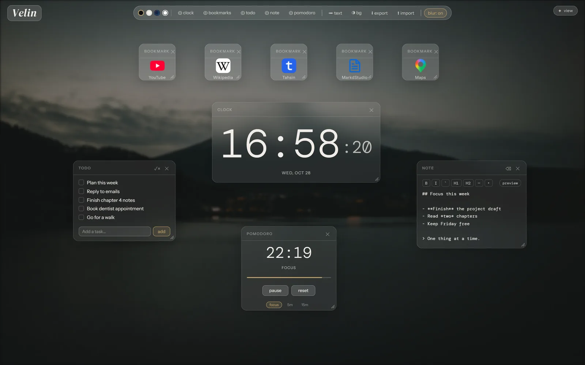
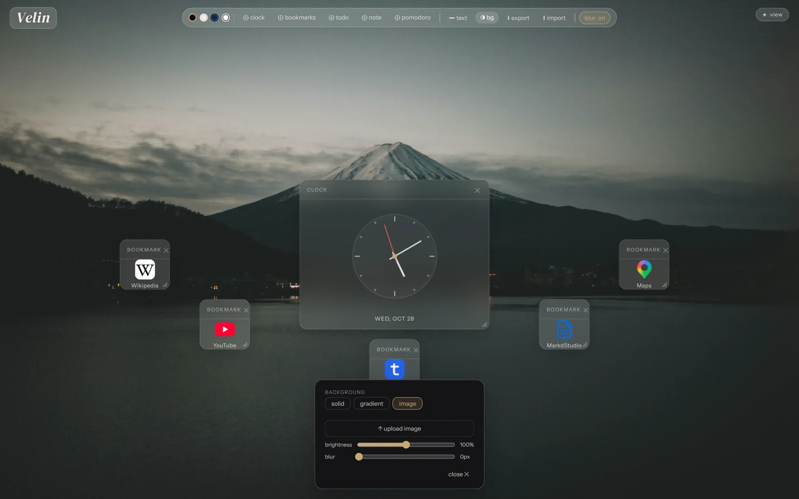

Velin guide
Get Velin onto your new tab, then learn your way around it. Pick the route that fits your browser:
Chrome, Edge, Brave. About a minute.
Install steps Another extensionAny browser. Uses the web version.
See the options Already set up?Jump to how Velin works.
Start hereInstall the extension
For Chrome, Edge and Brave. Velin isn't on the Web Store yet, so you load it yourself in developer mode.
- Unzip it somewhere permanent. The browser loads Velin from that folder, so don't delete it afterwards.
- Open your browser's extensions page. Browsers block links to it, so copy the address and paste it into a new tab.
- Turn on Developer mode. It's the switch at the top right.
- Click Load unpacked and choose the unzipped folder.
- Open a new tab. That's Velin.
- Developer mode notice
- Your browser may warn about developer mode extensions. That's expected until Velin is on the Web Store.
- Updating
- Download the new zip, replace the files in the same folder, then press the reload icon on Velin's card. Your data stays.
- Removing
- Removing the extension deletes its data, so export first (see backup).
- Firefox
- Not supported as an extension yet. Use the options below.
Use Velin without its extension
The web version lives at the address below. Point your new tab at it with one of these options. Data you create this way belongs to the website, so it's separate from the extension's data.
https://newvelintab.netlify.app/app
These browsers have no setting for a custom new tab address, but a "new tab redirect" extension does the job.
- Search your extension store for new tab redirect or custom new tab URL (Edge can also use the Chrome Web Store).
- Install one and open its options.
- Paste the Velin address. Use the full address starting with
https://. - Open a new tab.
Choose carefully. A new tab extension sees every new tab you open. Read the permissions and privacy details first and prefer one that asks for little. Redirect extensions also usually can't put the cursor in the address bar.
Firefox can set a custom page for the homepage and new windows (Settings, Home, Homepage and new windows, Custom URLs). For new tabs it only offers Firefox Home or a blank page, so putting Velin on every new tab takes a new tab extension from addons.mozilla.org. Search for new tab override and use the address above.
Safari can do it by itself. Open Safari, Settings (older versions say Preferences), go to General, set the Homepage to the Velin address, and choose Homepage for new tabs.
Bookmark the address, or set it as your startup page (in Chrome, Settings, On startup, Open a specific page). You won't get it on every new tab, but it's one click away.
Using Velin
Everything saves automatically to your browser's IndexedDB. There's no save button.
- Open a new tab (or the web version).
- Click ✎ edit at the top to switch to edit mode, which unlocks dragging, resizing and adding.
- Add widgets, change the background or place text from the toolbar at the bottom.
- Switch back to view mode so nothing moves by accident.
- View mode ✦
- Widgets are locked in place. The safe default for everyday use.
- Edit mode ✎
- Widgets can be dragged, resized and deleted, and free text can be placed. Press E to switch.
Widgets
Add them from the toolbar. In edit mode, drag a widget by its header, resize it from the bottom right corner, and remove it with ✕.
- Clock
- Click the face to switch between digital and analog.
- Bookmarks
- Add a name and a URL. Velin looks up the site's icon and falls back to a letter. Only
http://andhttps://addresses are accepted. - Todo
- Type a task and press Enter. Tick to finish, × to delete, and ✓× in the header to clear everything finished.
- Note
- A markdown editor with live preview: headings, bold, italic, code and code blocks, links, bullet, numbered and task lists, quotes, rules and tables. Notes always show the rendered version in view mode.
- Pomodoro
- 25 minutes of focus, a 5 minute break, and a 15 minute break every fourth session. Allow notifications if you want an alert when a session ends. The timer stays in sync across tabs.

Text, background and themes
- Free text
- Click ✏ text in edit mode, then click anywhere to drop a text box. Select it for a style bar: size, rotation, bold, color, delete. Esc leaves text mode.
- Background
- ◑ bg opens three tabs: solid colors, gradients, and your own image (up to 8 MB) with brightness and blur sliders. Only one image is kept, and a new upload replaces it.
- Themes
- The four dots in the toolbar switch between dark, light, glass, and black and white.
- Backdrop blur
- ◈ blur cycles auto, on and off. If Velin feels slow on an older machine, try off.

Backup and moving data
- ⬇ export
- Downloads one JSON file with your whole setup: theme, background, widgets, notes and bookmarks.
- ⬆ import
- Loads such a file. It replaces your current setup, so export first if you want to keep it.
The extension, the web version and each browser keep separate storage. To move between them, export in the old place and import in the new one. Do this before removing the extension or clearing site data, both of which erase Velin's data.
Shortcuts
- E
- Toggle view and edit mode (not while typing in a text field).
- Enter
- Confirm a new todo item or bookmark.
- Esc
- Leave free text placement mode.
Troubleshooting
My new tab still shows the browser's default page
Check that Velin is switched on at your extensions page. Only one extension can control the new tab, so turn off any other new tab extension.
My widgets or notes are gone
Velin stores data per place: the extension, the website and each browser are separate, and removing the extension or clearing site data erases it. If you set Velin up in one place and opened another, you're looking at an empty copy. Import an export file to bring your setup across.
I don't get a notification when the Pomodoro ends
Notifications need your permission. Allow them when asked, or check the page's notification permission in your browser's site settings.
Velin feels slow
Set ◈ blur to off and use a smaller background image.
Something else
Send a message from the form on the home page footer, or open an issue on GitHub.